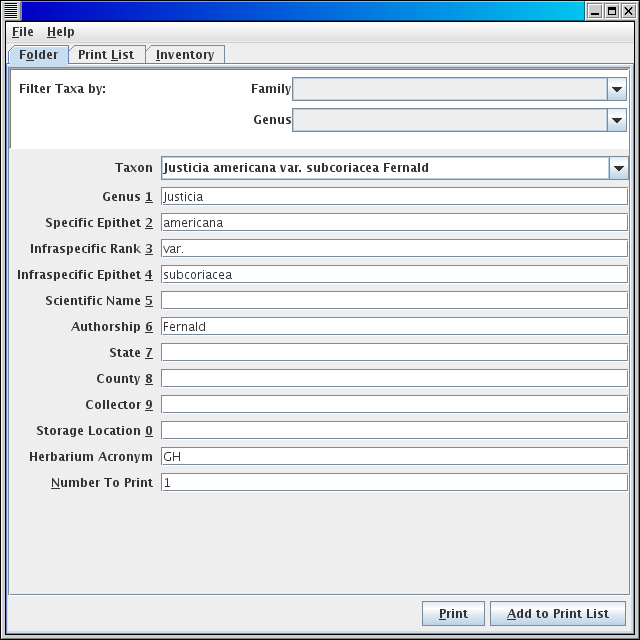
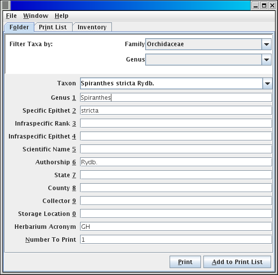
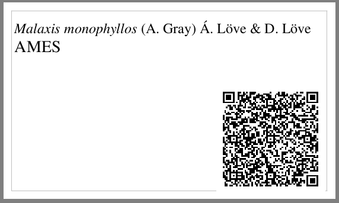
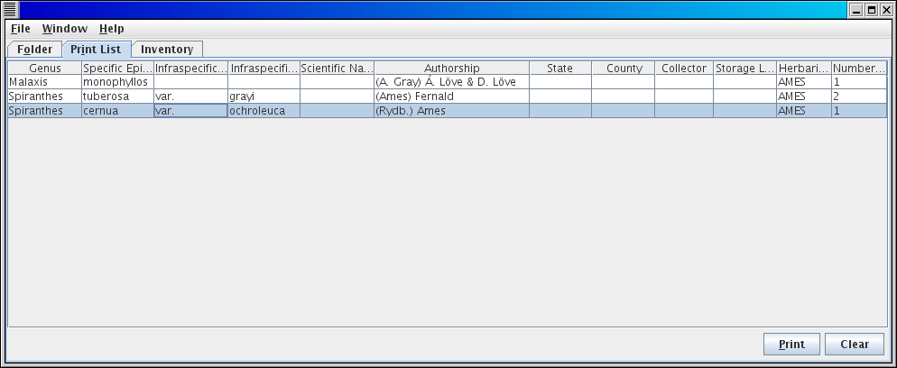
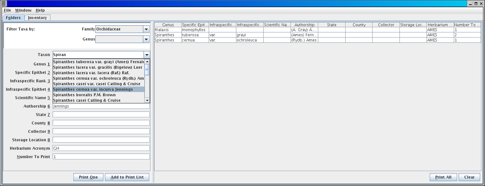

The pre-capture application has three main functions: First, to capture the information that applies to all specimens within a container. Second, to print out sets of labels or pages (on paper or adhesive label stock) that can be associated with containers such as folders or unit trays. Third, to take a rough inventory of the number of specimens for which pre-capture labels are being generated. These three functions are reflected on the three main tabs of the application.
An alternative view places the form to capture the fields pertaining to a container next to the spreadsheet list of the set of labels to be printed.

The organization of folders of herbarium sheets in cabinets (and other sorts of collection objects in other collections) often follows a taxonomic heirarchy. The taxon pick list can be filtered to reflect this organization. If you are working with a cabinet of herbarium sheets that contains a single family, you can select the family name on the Filter by Family picklist

Once you have selected a family, you can tab into the taxon name picklist and begin to enter any part of the taxon name that is the filed under name for a folder. The taxon name picklist will open showing the taxa within the family, and as you type will filter that list down to names that contain the part of the name that you are typing.

The arrow keys will move you down into the taxon pick list, and tab will pick the current selection (or you can click on a name in the list). Once you have selected a name from the taxon pick list, the fields for that taxon name will be automatically filled in, and you can tab (or use alt and a number key to move directly to a field in the list Alt-9 goes to the 9th item in the list (you can use these key combinations instead of tab to leave the taxon picklist)) to other fields that you want to populate with information that applies to all sheets within the folder. The list of fields is configurable for a project and the number and specific fields present on the form may be different from the screenshots. If you have more than one folder with identical information, you can set the number to print field to the number of copies of the label for that folder that you want to print.
Once you have filled in all the fields that apply to all sheets in the folder that you are working on, you can press Print to print the single label that you have just filled in (in the number of copies specified with by number to print field), at which point a printer dialog will pop up and a pdf file named labels.pdf will be written to the current folder. The pdf file will be written even if you hit cancel on the printer dialog.

The resulting label will print in the currently selected print format (see Print format configuration below).
Alternatively, you can press the Add to Print List button (Alt-A), and add the current label to the list on the Print List tab, where you can modify the information and print larger sets of labels as desired. As with printing a single label, printing a set of labels will bring up the printer dialog and write the labels to labels.pdf
If you switch to the split screen view Window/Change to..., the field list will appear on the left side of the screen, and the print list on the right, all in the same tab. You can switch back and forth between views while retaining the same print list. The print list does not persist between restarts of the program. It is cleared when you exit or when you press the Clear button.
If the inventory functionality has been enabled in your installation (property config.showinventorytab=true), then a tab will show up in the main program screen labeled Inventory. This tab allows you to estimate the number of specimens that are to be imaged within a container. The default configuration is for herbarium cabinets, organized by family, with measurements of how many inches thickness of sheets are present for the folders covered by your project in this cabinet in this family, along with an estimate of how many sheets are found per inch in this family. Follow project protocols for how to use this inventory if your project includes an inventory estimation in the precapture phase.
This functionality is not yet available inside the PreCapture application, see Loading a Taxon Authority File
To exit, use File/Exitfrom the main menu. During a normal exit, backups of the taxon authority file and inventory are made. See: managing backups.